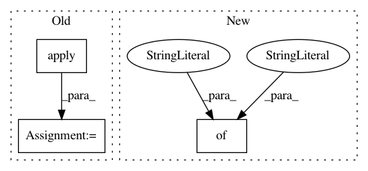

c6f886148450abd45db031461210de805579c75c,demo_semiotic.py,,,#,3
Before Change
import scattertext as st
movie_df = st.SampleCorpora.RottenTomatoes.get_data()
movie_df.category = movie_df.category.apply \
(lambda x: {"rotten": "Negative", "fresh": "Positive", "plot": "Plot"}[x])
corpus = st.CorpusFromPandas(
movie_df,
category_col="category",
After Change
category_b="rotten",
neutral_categories=["plot"],
scorer=st.RankDifference(),
labels={"not_a_and_not_b": "Plot Descriptions",
"a_and_b": "Reviews",
"a_and_not_b": "Positive",
"b_and_not_a": "Negative",
"a":"",
"b":"",
"not_a":"",
"not_b":""}
)
html = st.produce_semiotic_square_explorer(semiotic_square,
category_name="fresh",
In pattern: SUPERPATTERN
Frequency: 3
Non-data size: 3
Instances
Project Name: JasonKessler/scattertext
Commit Name: c6f886148450abd45db031461210de805579c75c
Time: 2018-02-18
Author: jason.kessler@gmail.com
File Name: demo_semiotic.py
Class Name:
Method Name:
Project Name: etal/cnvkit
Commit Name: 1fe319ef49168c2c7c8d10a7c426c1414521d164
Time: 2016-10-28
Author: eric.talevich@gmail.com
File Name: cnvlib/tabio/genepred.py
Class Name:
Method Name: read_refflat
Project Name: soft-matter/trackpy
Commit Name: dbeab7509cfec1314b6529d57fbd090ce744695c
Time: 2017-07-27
Author: caspervdw@gmail.com
File Name: trackpy/motion.py
Class Name:
Method Name: compute_drift